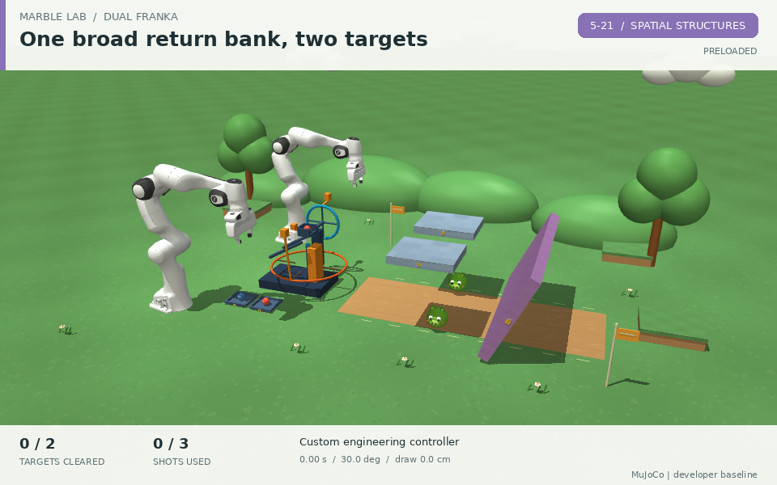

Plan
Decompose long goals, preserve legal order, and choose the next subgoal.
hierarchyconstraints
OPEN BENCHMARK / PHYSICS-GROUNDED
Measure how agents predict physical outcomes, plan under constraints, and reason about space when every action has consequences.

From language goals to grounded action.
Embodied Playground tests three connected forms of reasoning through robotic interaction: physics reasoning about motion, contact, and cause and effect; strategic reasoning about subgoals, rules, and recovery; and spatial reasoning about geometry, poses, and reachability.
Long tasks connect all three: can an agent keep track of state, choose the next action, detect a bad contact, and revise its plan?
The current AgentBench scope contains 410 environment task entries with native actions, observations and trusted scoring. Clients use describe / observe / step / finish; initialization and reset belong to the environment owner. Full engineering qualification remains incomplete.
Read the benchmark framingWhat the benchmark makes visible
Physics, strategic, and spatial reasoning connect planning, perception, control, memory, recovery, and transfer. The map describes benchmark targets; scores remain tied to each task’s protocol.
Decompose long goals, preserve legal order, and choose the next subgoal.
Infer objects, poses, occlusions, and geometry from the permitted observation profile.
Execute precise contact, grasp, regrasp, bimanual, and dynamic interactions.
Track state across many actions, handoffs, rotations, and partial progress.
Detect failure, diagnose the cause, and revise the plan before the episode ends.
Carry useful strategies across embodiments, physics, viewpoints, and task variants.
One interface. Many worlds.
Hanoi probes strategic planning; cubes, locks and bookshelf tasks demand spatial reasoning and contact control; Angry Birds and ManiSkill test physical interaction. Task entries include their declared embodiments. Development-only appliance and grasping examples are outside this 410-entry scope.
Loading current catalog…
No tasks match these filters. Try another combination.
Environment inventory and evaluation plan
The current environment source scope publishes no model results or leaderboard. These counts describe the planned evaluation, not completed runs. Historical demonstrations below do not establish performance under the current protocol.
Code integration, historical demonstrations and complete qualification are separate. Missing checks are not passes.
Comparable by design, honest by default.
The benchmark separates what an agent can observe from what the evaluator knows. A run is scored against hidden physical state, legal constraints, termination rules, and resource budgets.
Read the capability rulesProtocol: environment-four-trial-v2 · Permissions: 2026-10-09-environment-l0-l3
Python standard library, NumPy and Pillow. RGB and proprioception; no prebuilt dynamics, IK, planning or external vision/grasp tools.
base accessAdds specifically granted and installed vision, geometry, IK, planning and proxy tools. Observations follow the declared profile.
explicit grantsAdds specifically granted and installed pretrained grasp/contact tools. Permission level and observation profile remain distinct.
tool-assistedAdds explicitly declared privileged read-only fields. No level permits writing simulator state.
read-only stateEvery group has four independent trials. Angry Birds has loaded and ground groups; other tasks have one default group. Rubik, Kongming and ManiSkill preserve fixed cases with light factors 0.85 / 0.95 / 1.05 / 1.15. Formal ManiSkill trials use default physics only.
A complete group reports successful episodes / 4. Any invalid or missing trial makes the group partial, with a null final success rate. Normal task timeout is a valid failure; initialization errors, rejected actions and wall-clock expiry are invalid attempts. Tokens and image reads are not environment qualification gates.
Read the four-trial protocol ↗Rule violations, visible penetration, forbidden contact, falls, and budget overruns remain separate from task reward.
See the world respond.
Browse native scene previews, the three ManiSkill ten-scene atlases, the native bookshelf scene, and historical reference recordings. Images and recordings retain their source content. They do not establish current four-trial results or complete engineering qualification.
Loading media…
Browse source files and hashes for the added media ↗ or the existing demo provenance ↗. Bookshelf includes a newly rendered native scene. A robot rollout remains unavailable.
BUILD WITH US
Bring a new model, a new tool stack, or a new embodiment. The playground is designed to make the interface explicit and the failure legible.